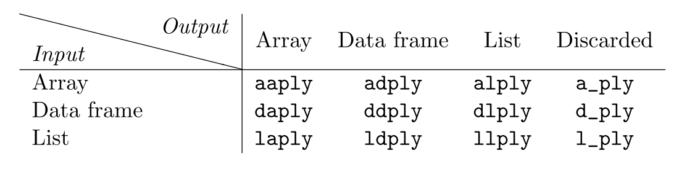

Chapter 13 dplyr
13.1 Tidyverse and dplyr
For this document you will need to install and load the family of tidyverse functions. To install the package refer to Section 7.
The tidyverse is a collection of packages that share a unique underlying philosophy, frame work, and syntax. There are approximately 20 tidyverse packages, but the core ones are ggplot2, dplyr, tidyr, readr, purr, tibble, stringr, and forcats. You can install these packages individually or all at once using by simply using the command install.packages("tidyverse").
We will be focusing on the dplyr package for now, which is the updated version of the plyr package. The functions and topics that we that we will be covering can be found in Wickham (2011).
13.2 Iteration with dplyr
The main focus of the dplyr package is to formalize cleaning, and implementing functions to our data sets. In many data sets we have to split the data into the desired subsets, apply a function, and then reformat the data with adjustments. This process appears over and over again. When we apply or implement a function to different components of a data set we typically use an apply method or for loops, Sections 9 and 8 respectively. Often times this can take several lines of code to accomplish.
The dplyr package aims to reduce the amount of steps it takes to accomplish these tasks. In general, the functions in the dplyr package are considered iteration techniques and are closely related to the apply functions in base R. In some cases, a dplyr preforms exactly the same as the apply functions, both in terms of efficiency and in the task accomplished.
Although the dplyr package contains similar functions to base R, some users find this dplyr functions to be more intuitive. In addition, the dplyr functions generally have more features and can simplify code. The techniques in the dplyr package are known as the split-apply-combine method. They work to split a data set in the desired way, apply the desired function, and combine and return the desired output to the user all in one step. This philosophy of the dplyr functions is inspired by Google’s map-reduce technique of analyzing their data sets.
13.3 Syntax
For the dplyr package an array includes the special cases of vectors (1d arrays) and matrices (2d arrays). Arrays are made out of any atomic vector: logical, character, integer, or numeric. A list is a non-atomic array, which is is an array that can contain any type of data structure. A data frame is a 2d array where each column can be a different atomic class.
The functions of the dplyr package have the same general structure: ?*ply(). All dplyr functions have simple and informative names, the first (?) and second (*) characters describe the input and output data types, respectively. Several inputs and outputs are supported: a = array, d = data frame, l = list, and _ = discarded.
- first character (input type): a, d, l
- second character (output type): a, d, l, _ (nothing)
A table of the 12 core functions is directly below.

Similarily to the apply functions, the functions have two or three main arguments depending on the input.
a*ply(.data, .margins, .fun, ...)d*ply(.data, .variables, .fun, ...)l*ply(.data, .fun, ...)
The first argument .data contains the object that will be split, processed, and recombined. The second argument .variables or .margins describes how to split up the input into pieces. The third argument .fun is the processing function that is to be applied to each piece.
The tidyverse uses function arguments to start with a “.” in order to differentiate the dplyr arguments with any arguments to be passed to the processing function (.fun).
In general, the dplyr functions have a very similar set up to the apply functions in base R. Recall apply(ARRAY, MARGIN, FUN).
13.3.1 Inputs
13.3.2 Outputs
13.4 Helpers
13.4.1 Processing bar
13.4.2 Fail Case
13.5 Examples
13.6 Comparison to Base R
References
Wickham, Hadley. 2011. “The Split-Apply-Combine Strategy for Data Analysis.” Journal of Statistical Software 40 (1): 1–29.